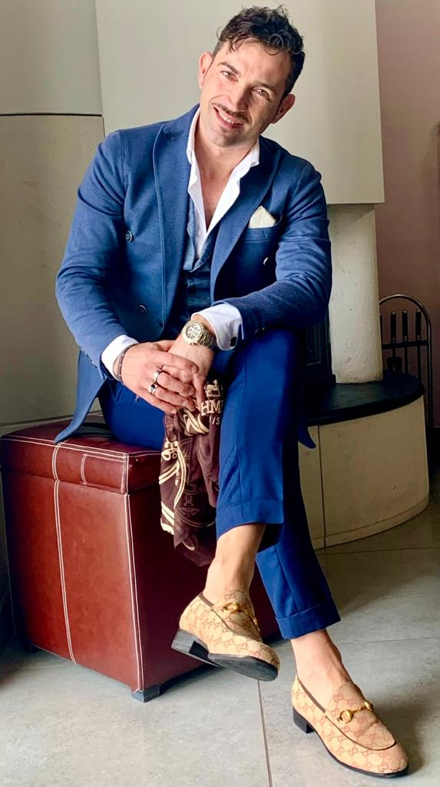

<link rel="stylesheet" href="style.css">
<main id="main">
  <div id="title">
    <h1>CARMINE BERNABOTTO</h1>
    <h2>FONDATORE DELLA GOLD CENTER CLUB</h2>
  </div>        
  <div id="img-div">
    
  </div>
  <div id="tribute-info">
    <div id="quote">
      <i>“Oggi, grazie a voi, posso dire che la scelta fatta 10 anni fa era onesta e sincera con uno scopo ben definito: “Prendermi cura di voi!”
        Sono fratello d’arte pasticciere e l’ho rispettata per 20 anni, ma dentro di me bruciava un fuoco autentico, una determinazione chiamata passione.
        Fare l’imprenditore dello sport.

Passando da istruttore qualificato a personal trainer, oggi sono top manager della Gold Center Club che si sviluppa nel territorio di San Giovanni Rotondo e San Marco in Lamis.

Tu sei importante!
Se vuoi emergere, stare meglio, sentire veramente il tuo benessere psico-fisico, ottimo! Devi solo contattarmi ed insieme inizieremo un programma di allenamento al top per te!.”</i> ― Carmine Bernabotto
    </div>
    <div class="awards-honours">
      <h3>Biografia:</h3>
      <p>Nato e cresciuto nella pittoresca città di San Giovanni Rotondo, Carmine Bernabotto ha sempre mostrato una straordinaria passione per lo sport sin dalla giovane età. Fin da bambino, Carmine trascorreva le sue giornate a giocare a calcio con gli amici del quartiere o a correre lungo le strade tortuose della sua città natale.</p>

      <p>Sebbene la sua famiglia fosse nota per la sua rinomata pasticceria, Carmine sentiva che il suo destino era diverso. Crescendo tra i profumi invitanti di dolci appena sfornati e le lezioni di vita imparate dietro il bancone della pasticceria di famiglia, Carmine aveva imparato l'importanza del duro lavoro, della dedizione e della genuina cura per gli altri.</p>

      <p>Tuttavia, dentro di lui, bruciava un desiderio ardente di perseguire una strada diversa. Dopo aver completato gli studi, Carmine prese una decisione coraggiosa e audace: lasciò la sicurezza della pasticceria di famiglia per inseguire la sua vera passione, lo sport e il fitness. Deciso a condividere la sua passione con il mondo, si immerse nello studio dell'allenamento personale e della nutrizione, guadagnandosi presto le qualifiche e le competenze necessarie per diventare un istruttore di fitness certificato.</p>

      <p>Con un'ambizione senza limiti e una visione chiara, Carmine fondò la Gold Center Club, un centro fitness innovativo che avrebbe combinato l'allenamento fisico con il supporto emotivo e la motivazione personale. La Gold Center Club non era solo un luogo per fare esercizio; era diventato un rifugio per coloro che cercavano ispirazione, sostegno e trasformazione personale.</p>

      <p>Oltre a essere un imprenditore di successo, Carmine è diventato una figura rispettata e ammirata nella sua comunità. Con il suo approccio empatico e incoraggiante, ha aiutato innumerevoli persone a superare le proprie sfide fisiche e mentali, guidandoli lungo il percorso verso una vita più sana, più felice e più appagante.</p>

      <p>Oggi, Carmine Bernabotto continua a ispirare gli altri con la sua storia di determinazione, passione e altruismo. La sua biografia non è solo quella di un imprenditore di successo, ma di un individuo che ha dedicato la propria vita a promuovere il benessere e il cambiamento positivo nella vita degli altri.</p>
    </div>


</div>
</main>
